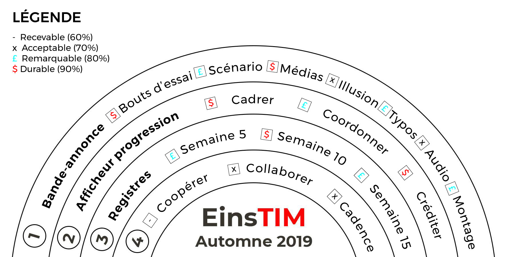

Registres
| Mon registre personnel | #1_.docx | #1_.pdf |
| Mon registre analyser les AdP | analyser_.docx | #1_.pdf |
| Mon registre traiter pour le télé-travail | Télé-travail_.docx | |
| Le registre de ma faction | #2_.doc | #2_.pdf |
| Mon registre de développement | #3_.doc | #3_.pdf |
| Mon registre de scénarisation | Scenariser_.docx | #4scenariser_.pdf |
| Mon registre de traitement | #5_.doc | #5_.pdf |
Médias
| A – Mon afficheur de progression | A – Dossier .zip | ou Chemin d'accès |
| B – Le montage de ma faction | B – Dossier .zip | ou Chemin d'accès |
| #1 – titre approuvé | #1 – Dossier .zip | ou Chemin d'accès |
| #2 – titre approuvé | #2 – Dossier .zip | ou Chemin d'accès |
| #3 – titre approuvé | #3 – Dossier .zip | ou Chemin d'accès |
Aide-Mémoire
Logigramme
